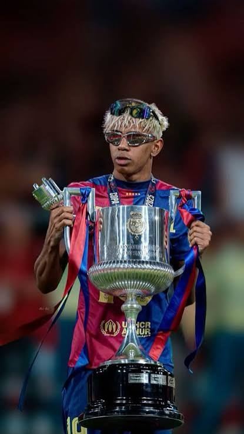
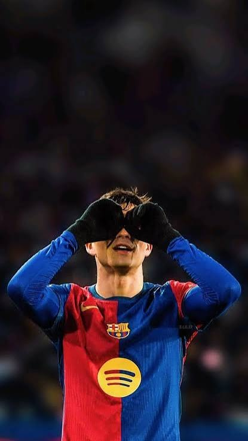
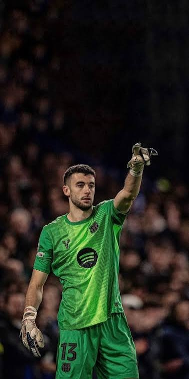
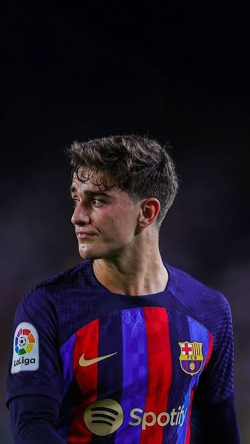
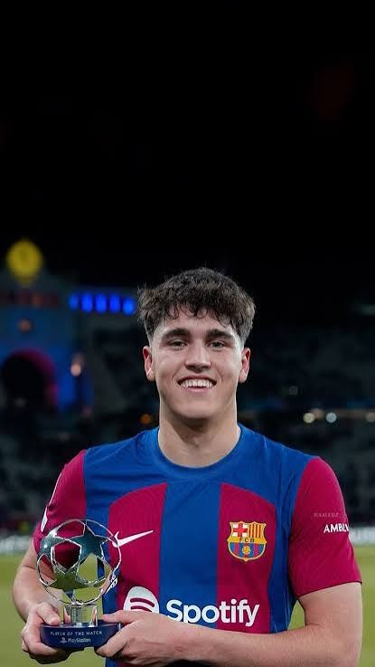
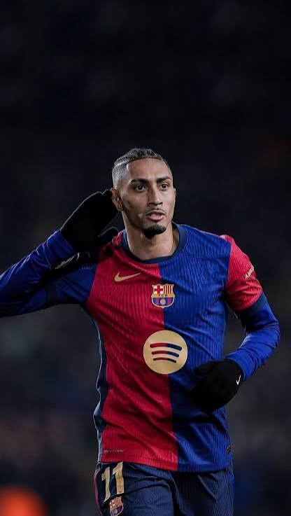

Plantilla Oficial i Registre Estadístic
Selecciona un futbolista per visualitzar la seva fitxa completa i les estadístiques oficials verificades al FC Barcelona.

10 · Lamine Yamal
8 · Pedri
1 · Joan Garcia
6 · Gavi
5 · Pau Cubarsí
11 · Raphinha
10
Lamine Yamal
Davanter · Internacional amb Espanya
Format a La Masia des de categoria benjamí, va debutar amb el primer equip amb 15 anys. Destaca per la seva capacitat de desbordament per banda dreta, visió per a l'última passada i precisió en el xut exterior.
Registre oficial verificat · Font: fcbarcelona.cat (Només lectura)
167
Partits Oficials FCB
62
Gols Oficials FCB
57
Assistències FCB
* Estadístiques oficials acumulades al primer equip del FC Barcelona (Només lectura).